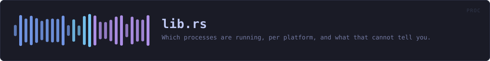

crates/veilvoice-proc/src/lib.rs
veilvoice-proc · 276 lines · read the source here · or on GitHub
Which processes are running, per platform, and what that cannot tell you.
Why this is a crate rather than a module
Two of this workspace's security features need the same answer: which programs are running. veilvoice-capture asks it about screen recorders, veilvoice-input asks it about keyboard and mouse monitors, and the answer is one platform-specific listing with one set of limits.
It began inside veilvoice-capture as a private module. Leaving it there and depending on that crate would mean a keyboard-monitoring feature pulling in a table of screen recorders it will never look at, which is exactly what the design note in ROADMAP.md says these crates must not do: each is a crate of its own, so that another project can depend on one without taking all of them. The alternative -- a second copy of the parser -- is worse: this project already extracted veilvoice-check out of the verifier so the desktop application and the command line could not drift apart, and the reasoning is the same here.
Linux reads files; the other two ask a tool
On Linux every process publishes its own name at /proc/<pid>/comm, so the list is a directory walk and nothing is spawned. Windows and macOS have no such file, and their native APIs are FFI -- #![forbid(unsafe_code)] holds here as it does everywhere else in the workspace, so this asks a tool the system already ships, exactly as veilvoice-watch asks the registry and veilvoice-drivers asks driverquery.
What this can see, and what it cannot
Processes belonging to the user running VeilVoice, and -- depending on the platform and the privileges -- usually not much more. A program running as another user or as a service may not appear at all.
It sees a program that is running. It does not see what that program is doing. Every caller has to phrase its findings accordingly, and SCOPE is the wording to show rather than an invitation to invent one.
comm on Linux is truncated to fifteen characters by the kernel, so any table matched against this must carry a name of fifteen characters or fewer for every program it expects to find there. A sixteen-character executable would otherwise stop matching on one platform only, silently -- and the tables that do this keep their own tests for it, next to the table, because that is where somebody adds a row.
In plain words
This asks your computer which programs are open right now, in the way each operating system prefers to be asked. It is used by the parts of VeilVoice that warn you when something able to record your screen, or watch your typing, is running.
Two honest limits. It can only see programs running as you -- something hidden well enough, or running as the system, will not appear. And it only knows a program is open, never that it is actually recording or watching. Anything built on top of this has to say so in those words.
WHAT THIS FILE CONTAINS
276 lines defining 4 functions (1 public), 0 types and 1 constant. Everything below is read out of the source, so it cannot disagree with the code.
What happens when it runs. These are the ways in: public, and nothing else in this file calls them, so they are what an outside caller reaches first.
runningline 66 · Every process name this build can see, lower-cased and without a path.
reacheslinux,spawned,parse
WHAT CALLS WHAT
The functions this file defines, and the calls between them. An edge means the callee's name appears, called, inside the caller's body. This is a syntactic reading, not a type-resolved one.
The same graph as Mermaid source
%%{init: {"theme":"base","themeVariables":{"background":"#1a1b26","primaryColor":"#1f2335","primaryTextColor":"#c0caf5","primaryBorderColor":"#7aa2f7","secondaryColor":"#16161e","tertiaryColor":"#16161e","lineColor":"#737aa2","textColor":"#c0caf5","mainBkg":"#1f2335","nodeBorder":"#7aa2f7","clusterBkg":"#16161e","clusterBorder":"#2f3549","fontFamily":"ui-monospace, SFMono-Regular, Consolas, monospace","fontSize":"14px"}}}%%
flowchart TD
n_running(["running<br/>line 66"])
n_linux["linux<br/>line 86"]
n_spawned["spawned<br/>line 119"]
n_parse["parse<br/>line 171"]
n_running --> n_linux
n_running --> n_spawned
n_spawned --> n_parse
click n_running href "https://github.com/tilas01/veilvoice/blob/main/crates/veilvoice-proc/src/lib.rs#L66" "open the source"
click n_linux href "https://github.com/tilas01/veilvoice/blob/main/crates/veilvoice-proc/src/lib.rs#L86" "open the source"
click n_spawned href "https://github.com/tilas01/veilvoice/blob/main/crates/veilvoice-proc/src/lib.rs#L119" "open the source"
click n_parse href "https://github.com/tilas01/veilvoice/blob/main/crates/veilvoice-proc/src/lib.rs#L171" "open the source"
classDef entry fill:#1f2335,stroke:#7aa2f7,color:#c0caf5
class n_running entry
classDef helper fill:#1f2335,stroke:#bb9af7,color:#c0caf5
class n_linux,n_spawned,n_parse helperThis site loads no third-party script, so it cannot run Mermaid; the diagram above is the same nodes and edges drawn by the generator instead. GitHub renders the source below directly.
ITEMS
| Item | Line | Documentation |
|---|---|---|
running pub fn | 66 | Every process name this build can see, lower-cased and without a path. |
linux fn | 86 | Walk /proc and read each process's own name. |
spawned fn | 119 | Ask the system's own process lister. |
parse fn | 171 | Pull process names out of a listing. |
SCOPE pub const | 193 | What a reader has to be told, in the words to show them. |